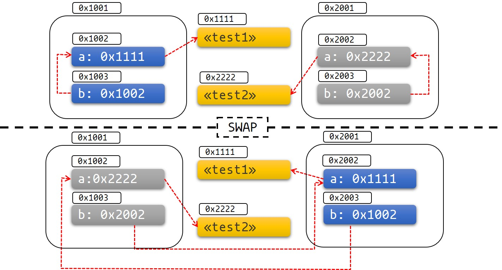

让我们开始吧
欢迎来到Rust异步编程！如果你打算开始学习编写 Rust 异步编程，那么就来对地方了。
无论是构建 Web 服务器、数据库，亦或是一个操作系统，
这本书将向你展示如何使用 Rust 异步编程工具来充分发挥你的硬件性能。
这本书包含了哪些内容
本书旨在成为一本全面的，最新的 Rust 异步功能及库的指南，且适用于初学者或是老手。
-
前几章对异步编程进行了概括性介绍，及 Rust 在此上的一些特性。
-
中间的章节则介绍了在异步编程中，使用到的一些关键实用程序及控制流工具， 并讲解了一个构建库和和应用程序，并达到最佳性能与复用性的实例。
-
本书的最后一部分，则涵盖了更广泛的异步编程生态，提供了许多完成常见任务的例子。
有了这些介绍，让我们探索 Rust 异步编程世界，开始这一令人激动人心的旅程吧！
Why Async?
为什么选择 Rust ？
我们都喜欢 Rust 这种可以让我们去编写高性能且安全的软件的特性。但在异步编程中， 如何同样的保证这一点呢？
异步编程，或简称异步，是一种被越来越多的语言所支持的并发编程模式。它允许你在
少量的 OS 进程上运行大量的并发任务， 通过使用async/await语法，可同时使其在
使用和感观上基本等同于普通的同步编程。
异步与其它并发模式对比
并发编程并不如常规的同步编程成熟，也没那么标准化。因此，我们需根据语言支持的 并发模型，以不同的方式表达并发。 下面简单介绍最受欢迎的并发模型，这应该可以帮助你去理解异步编程如何适应更广泛的 并发编程领域：
- OS 线程 不需要对编程模型进行任何修改，这使你可非常方便的进行并发编程。 然而，在线程之间进行同步很困难，且带来的性能开销很大。线程池可减少一些开销， 但并不足以满足海量的 I/O 密集工作负载。
- 事件驱动编程（Event-driven programming），与回调结合来使用，可以非常高效， 但往往会导致冗长的，非线性的控制流。数据流和错误信息通常难以追踪。
- 协程，和线程一样，不需要对编程模型进行任何修改，这使得使用它变得非常简单。 同时和异步一样，它也可以支持海量的任务。但是，它抽象出了对系统编程来说很重要 的低级细节与自定义运行时的执行器。
- actor 模型 将所有的并发计算划分成
actor单元，这使得错误信息的传递变得简单 ，就和分布式系统一样。actor 模型可以有效的实现并发编程，但它留下了许多未解决的 实际问题，如流的控制和重试逻辑。
总之，异步编程可实现高性能计算，且适用于 Rust 这种低级编程语言，它同时提供了线程 和协程中的大部分人性化的优点。
Rust 与其它语言中的异步对比
尽管在许多语言中，都支持进行异步编程，但一些细节因实现而异。Rust 对异步的实现与 大部分编程语言有以下几个不同：
- Rust 中的 Futures 只有在进行轮询时，才会执行，删除 future 会停止其进一步 执行。
- Rust 中 Async 是零开销 的，这意味着只有所执行的任务才会消耗算力，具体来讲， 你没有在 async 过程中进行堆的分配和动态调度，这可使性能得到充分的发挥！ 这让你可以在资源有限的环境中使用 async，如嵌入式系统中。
- Rust 并未提供内置运行时环境，而是由社区维护的 crates 提供。
- Rust 中提供了 单线程和多线程 的运行时环境，它们各有不同的优势与缺点。
Rust 中异步和多线程的对比
Rust 中异步的主要替代方法是使用系统进程，或直接使用
std::thread生成，亦或通过线程池调用。
从线程迁移至异步，通常的主要工作是进行重构，去实现功能和暴露的
APIS（如果你构建一个库），反之亦然。所以，在早期选定适合你需求的模型会大大节省你的
开发时间。
系统线程 适用于少量的任务，因为进程会消耗 CPU 和内存的开销。生成新进程 或是在进程之间切换的代价很高，即使是空闲的进程也在消耗系统资源。诚然，使用进程池 会一定程度上减少这些开销，但不能消除。好处是，使用线程可以让你无需对代码进行大量修 改即可复用——即其不需要特定的编程模型。在一些系统中，你可以定义线程的优先级，这在 如驱动或其它低延时程序中非常有用。
异步 可显著的降低带来的 CPU 和内存的消耗，特别是对于海量 IO 密集型的任务负载， 如服务器和数据库。在其它条件相同的情况下，它可以使你运行比使用系统线程时 多几个数量级的任务，因为异步的运行时环境使用少量（高代价）的线程来处理巨量的（廉价） 的任务。然而，由于异步函数生成了大量的状态机，且每个都可执行块都绑定了一个异步运 行时环境，其生成了更大的二进制 blobs。
最后提醒一下，异步并不比进程好，它们只是实现不同。如果出于性能方面考虑并不一定要 使用异步，那线程通常会是一个更简单的选择。
示例: 并发下载
在这个例子中，我们要实现同时下载两个页面。在典型的线程应用中， 我们需要创建线程来实现并发：
fn get_two_sites() {
// Spawn two threads to do work.
let thread_one = thread::spawn(|| download("https://www.foo.com"));
let thread_two = thread::spawn(|| download("https://www.bar.com"));
// Wait for both threads to complete.
thread_one.join().expect("thread one panicked");
thread_two.join().expect("thread two panicked");
}然而，下载一个网页是个极小的任务，为之创建一个进程是十分浪费资源的， 在一个更大的程序中，它很容易成为瓶颈。在 Rust 异步中， 我们可以并行的运行这些任务而无需额外进程。
async fn get_two_sites_async() {
// Create two different "futures" which, when run to completion,
// will asynchronously download the webpages.
let future_one = download_async("https://www.foo.com");
let future_two = download_async("https://www.bar.com");
// Run both futures to completion at the same time.
join!(future_one, future_two);
}这里，没有创建额外的进程。此外，所有的函数调用都是静态分配的，没有额外的堆分配！ 但是，我们首先需要实现异步编程，而此书将帮助你完成它。
Rust 中的自定义并发模型
最后一点要强调的是，Rust 并不强制你在线程和异步之间做出选择。 你可以在一个程序中同时使用这两种模型，有时混合使用线程和异步依赖时会有更好的效果。 实际上，你还可以同时使用其它不同的并发模型，如事件驱动编程，只要你找到一个合适的库来实现它！
Rust 的异步状态
Rust 异步编程中部分功能支持，与同步编程一样具有相同的稳定性保障， 其它部分则仍在完善开发中，不断更新、改变。使用 Rust 异步，你将会：
- 在典型的并发工作负载中获得出色的运行性能。
- 更频繁地与高级语言功能交互，例如生命周期和固定（Pinning）。
- 同步和异步代码之间，及不同的异步实现之间的一些兼容性约束。
- 由于异步运行时及语言功能支持的不断发展，会面临更重的维护负担工作。
简尔言之，使用 Rust 异步编程相较同步编程，将更难以使用且带来更重的维护负担， 但它将为你带来一流的运行性能。Rust 异步编程的所有领域都在不断改进， 因此这些问题都将会随着时间更迭而消失。
语言和库的支持
虽然 Rust 自身支持异步编程，但大多数的异步应用程序都依赖于社区的 crate 所提供的功能。因此，你需要依赖于语言功能及库的混合支持：
- 标准库提供了最基本的特征、类型和函数，
如
Future特征。 - Rust 编译器原生支持
async/await语法。 futurescrate 提供了众多实用的类型、宏和函数。 它们可以使用在任何 Rust 异步程序中。- 异步代码的执行、IO 和任务生功能成由“异步运行时”提供，例如
Tokio和async-std。大多数异步程序和一些异步 crate 依赖于特定的运行时，详情请参阅 “异步生态系统”。
你习惯于在 Rust 同步编程中使用的一些语言特性可能在 Rust 异步编程中尚不可使用。 需注意，Rust 不允许你在 traits 中声明异步函数，因此，你需要以变通的方式的实现它， 这可能会导致你的代码变得更加冗长。
编译和调试
在大部分情况下，Rust 异步编程中，编译器和运行时错误的工作方式与同步编程相同。 但有一些值得注意的区别：
编译错误
Rust 异步编译时使用同 Rust 同步编译中一样的严格要求标准来产生错误信息， 但由于 Rust 的异步通常依赖于更繁杂的语言特性，例如生命周期和固定（Pin）, 你可能会更频繁的遇到这些类型的错误。
运行时错误
每当编译器遇到异步函数时，它都会在后台生成一个状态机。 异步 Rust 中的堆栈追踪通常包含这些状态机的详细信息，以及来自运行时的函数调用。 因此，解读异步 Rust 的堆栈追踪可能比同步代码更复杂。
全新的故障模式
在 Rust 异步中，可能有一些新的故障模式，例如，你在异步上下文调用阻塞函数，
或者你没通正确地实现 Future 特征。编译器，甚至于有时单元测试也无法发现这些错误。
本书旨在，让你对这些基本概念都有着深刻的理解，从而避免踏入这些陷阱。
兼容性注意事项
异步代码和同步代码不能总是自由组合使用。例如，你不能直接从同步代码中调用异步函数。 同步和异步代码也倾向于使用不同的设计模式，这也使得编写用于不同环境的代码变得困难。
异步代码不能总是自由地组合。一些 crates 依赖于特定的异步进行时才能运行。 若如此，则一般会在 crate 的依赖列表中指定此依赖。
这些兼容问题会限制你的选择，因此请务必尽早调查、确定你需要哪些 crate 及异步运行时。 一旦你选定了某个运行时，就不会再担心兼容性的问题了。
性能特点
异步 Rust 的性能取决于你所使用的运行时的实现方式。 尽管为 Rust 提供异步运行时的库相对较新， 但它们在大多数实际工作负载中都表现的非常出色。
换句话说，大多数的异步生态系统都假定是一个多线程运行时。 而这使得它很难取得单线程异步程序理论上的性能优势，即更廉价的同步。 另一个被忽视的方面是对延迟敏感的任务，这对驱动、GUI 程序等非常重要。 这些任务需有操作系统的支持、选择适合的运行时，以便完成合理的调度。 在未来，会有更优秀的库来满足这些场景的需求。
async/.await 入门
async/.await 是 Rust 的内置工具，使得你可以如同写同步代码一样编写异步程序。
async 会将一个代码块转化为一个实现了名为 Future 特征的状态机。
虽然在同步方法中调用阻塞函数会阻塞整个线程，但阻塞的 Future 会让出线程控制权，
允许其它 Future 运行。
让我们在 Cargo.toml 文件中添加一些依赖项。
[dependencies]
futures = "0.3"
你可以使用 async fn 语法来创建一个异步函数：
#![allow(unused)] fn main() { async fn do_something() { /* ... */ } }
async fn 的返回值是一个 Future。需有一个执行器，Future 才可执行。
// `block_on` blocks the current thread until the provided future has run to // completion. Other executors provide more complex behavior, like scheduling // multiple futures onto the same thread. use futures::executor::block_on; async fn hello_world() { println!("hello, world!"); } fn main() { let future = hello_world(); // Nothing is printed block_on(future); // `future` is run and "hello, world!" is printed }
在 async fn 中，你可以使用 .await 等待另一个实现了 Future 特征的类型完成，
例如另一个 async fn 的返回值。与 block_on 不同，.await 不会阻塞当前线程，
而是在当前 future 无法取得进展时允许其它任务继续运行，同时在异步状态等待它的完成。
例如，现在我们有三个异步函数，分别是 learn_song，sing_song 以及 dance：
async fn learn_song() -> Song { /* ... */ }
async fn sing_song(song: Song) { /* ... */ }
async fn dance() { /* ... */ }一种是，学唱、唱和跳舞以阻塞的方式的执行：
fn main() {
let song = block_on(learn_song());
block_on(sing_song(song));
block_on(dance());
}然而，这种方式并未发挥出最好的性能——因为我们每次只做了一件事。
显然，只有在学会唱歌后才能去唱，但在我们学习或唱歌时，却可以同时跳舞的。
要实现这个，我们可以分别创建两个 async fn 来并发的执行：
async fn learn_and_sing() {
// Wait until the song has been learned before singing it.
// We use `.await` here rather than `block_on` to prevent blocking the
// thread, which makes it possible to `dance` at the same time.
let song = learn_song().await;
sing_song(song).await;
}
async fn async_main() {
let f1 = learn_and_sing();
let f2 = dance();
// `join!` is like `.await` but can wait for multiple futures concurrently.
// If we're temporarily blocked in the `learn_and_sing` future, the `dance`
// future will take over the current thread. If `dance` becomes blocked,
// `learn_and_sing` can take back over. If both futures are blocked, then
// `async_main` is blocked and will yield to the executor.
futures::join!(f1, f2);
}
fn main() {
block_on(async_main());
}在这个例子中，学习唱歌必须在唱歌之前，但学唱和唱歌都可与跳舞这个行为同时发生。
如果我们在 learn_and_sing 中使用 block_on(learn_song()) ，
而不是 learn_song().await，它将在执行时阻塞主进程直至学歌完成，而无法同时跳舞。
通过 .await，使得在学歌这一行为发生阻塞时，让出主进程控制权。
这使得可以在同一线程中同时运行多个 future 并驱使之完成。
深入了解：执行 Futures 和任务
在本章中，我们将介绍如何调度 Futures 和异步任务的底层结构。
如果你只想学习如何编写使用 Future 类型的高级代码，
而对 Future 类型的工作原理不感兴趣，可以直接跳到 async/await 章节。
但是，本章中提及的几个主题，对理解 async/await 是如何工作的，
运行时和 async/await 代码的性能特性，及构建新的异步原型大有帮助。
如果你现在决定跳过此章，那最好将它加入到书签中以便将来再重新审读它。
那么现在，让我们来聊一聊 Future 特征吧。
Future 特征
Future 特征是 Rust 异步编程的核心要义。
Future 是一种可以产生返回值的异步计算（尽管值可能是空，如()）。
Future 特征的简化版本可以是这个样子：
#![allow(unused)] fn main() { trait SimpleFuture { type Output; fn poll(&mut self, wake: fn()) -> Poll<Self::Output>; } enum Poll<T> { Ready(T), Pending, } }
通过调用 poll 函数可以推进 Futures，这将驱使 Future 尽快的完成。
当 future 完成时，将返回 Poll::Ready(result)。如果 future 尚不能完成，
它将返回 Poll::Pending，并安排在 future 在可以取得更多的进展时调用 wake() 函数。
当调用 wake() 时，驱动 Future 的执行器会再次调用 Poll，
以便 Future 取得更多的进展。
如果没有 wake()，执行器将无法得知特定的 future 什么时候可以取得进展，
将不得不去轮询每个 future，有了 wake()，执行器就能准确知道哪个 future
准备好被 poll 了。
例如，想像一下我们需要从一个套接字中读取数据，但它里面可能有数据，也可能为空。
如果有数据，我们可以读取并返回 Poll::Ready(data)，但如果是空，
我们的 future 将阻塞住、无法取得进展。所以在无数据时我们必须注册一个 wake
以便套接字上数据准备好时进行调用，它将通知执行器读取套接字数据这个 future 已就绪。
一个简单的 SocketRead future 如下：
pub struct SocketRead<'a> {
socket: &'a Socket,
}
impl SimpleFuture for SocketRead<'_> {
type Output = Vec<u8>;
fn poll(&mut self, wake: fn()) -> Poll<Self::Output> {
if self.socket.has_data_to_read() {
// The socket has data -- read it into a buffer and return it.
Poll::Ready(self.socket.read_buf())
} else {
// The socket does not yet have data.
//
// Arrange for `wake` to be called once data is available.
// When data becomes available, `wake` will be called, and the
// user of this `Future` will know to call `poll` again and
// receive data.
self.socket.set_readable_callback(wake);
Poll::Pending
}
}
}这种 Futures 模型允许将多个异步操作组合起来而无需中间分配。
一次运行多个 futures 或将其链接在一起，可通过无分配状态机实现，如下：
/// A SimpleFuture that runs two other futures to completion concurrently.
///
/// Concurrency is achieved via the fact that calls to `poll` each future
/// may be interleaved, allowing each future to advance itself at its own pace.
pub struct Join<FutureA, FutureB> {
// Each field may contain a future that should be run to completion.
// If the future has already completed, the field is set to `None`.
// This prevents us from polling a future after it has completed, which
// would violate the contract of the `Future` trait.
a: Option<FutureA>,
b: Option<FutureB>,
}
impl<FutureA, FutureB> SimpleFuture for Join<FutureA, FutureB>
where
FutureA: SimpleFuture<Output = ()>,
FutureB: SimpleFuture<Output = ()>,
{
type Output = ();
fn poll(&mut self, wake: fn()) -> Poll<Self::Output> {
// Attempt to complete future `a`.
if let Some(a) = &mut self.a {
if let Poll::Ready(()) = a.poll(wake) {
self.a.take();
}
}
// Attempt to complete future `b`.
if let Some(b) = &mut self.b {
if let Poll::Ready(()) = b.poll(wake) {
self.b.take();
}
}
if self.a.is_none() && self.b.is_none() {
// Both futures have completed -- we can return successfully
Poll::Ready(())
} else {
// One or both futures returned `Poll::Pending` and still have
// work to do. They will call `wake()` when progress can be made.
Poll::Pending
}
}
}这展示了如何在不进行单独分配的情况下同时运行多个 futures， 从而实现更高效的异步程序。同样，多个连续的 futures 也可以顺序地运行，如下：
/// A SimpleFuture that runs two futures to completion, one after another.
//
// Note: for the purposes of this simple example, `AndThenFut` assumes both
// the first and second futures are available at creation-time. The real
// `AndThen` combinator allows creating the second future based on the output
// of the first future, like `get_breakfast.and_then(|food| eat(food))`.
pub struct AndThenFut<FutureA, FutureB> {
first: Option<FutureA>,
second: FutureB,
}
impl<FutureA, FutureB> SimpleFuture for AndThenFut<FutureA, FutureB>
where
FutureA: SimpleFuture<Output = ()>,
FutureB: SimpleFuture<Output = ()>,
{
type Output = ();
fn poll(&mut self, wake: fn()) -> Poll<Self::Output> {
if let Some(first) = &mut self.first {
match first.poll(wake) {
// We've completed the first future -- remove it and start on
// the second!
Poll::Ready(()) => self.first.take(),
// We couldn't yet complete the first future.
Poll::Pending => return Poll::Pending,
};
}
// Now that the first future is done, attempt to complete the second.
self.second.poll(wake)
}
}这些例子展示了如何使用 trait 特征，在无需多个分配的对象和深度嵌套的回调情况下，
来表示异步控制流程。抛开基本的控制流程，让我们来谈谈真正的 Future
特征以及它的不同之处。
trait Future {
type Output;
fn poll(
// Note the change from `&mut self` to `Pin<&mut Self>`:
self: Pin<&mut Self>,
// and the change from `wake: fn()` to `cx: &mut Context<'_>`:
cx: &mut Context<'_>,
) -> Poll<Self::Output>;
}首先你会看到的是，self 类型已不再是 &mut Self 而是 Pin<&mut Self>。
我们将在后面的章节中详细讨论 pinning，
但现在你只需知道它允许我们创建不可移动的 futures 即可。
不可移动的对象可以在它们的字段之间存储指针，例如
struct MyFut { a: i32, ptr_to_a: *const i32 }。
Pinning 是启用 async/awiat 所必需的功能。
其次，wake: fn() 变成了 &mut Context<'_>。在 SimpleFuture 中，
我们通过调用函数指针（fn()）来通知 future 执行器来对调用 wake 的 future 进行 Poll
操作。然而，因为 fn() 只是一个函数指针而不包含任何数据，所以你无法得知是哪个
Future 在调用 wake。
在实际场景中，像 Web 服务器这样的复杂程序可能有成千上万个不同的连接，
而它们的唤醒工作应该分开来进行管理。Context 类型通过提供对 Waker
类型的值的访问解决了这个问题，该值可用于唤醒特定的任务。
通过 Waker 唤醒任务
futures 在第一次被 poll 时是未就就绪状态是很常见的。当出现这种情况时，
futures 需要确保在其就绪后即会被再次轮询。而这是通过 Waker 类型实现的。
每次轮询 future 时，都会将其作为“任务”的一部分进行轮询。 任务是已交由执行器控制的顶级的 future。
Waker 提供了 wake() 方法来告知执行器相关任务需要被唤醒。当调用 wake() 时，
执行器就知道其关联的任务已就绪，并再次轮询那个 future。
Waker 还实现了 clone()，以便复制和存储。
现在让我们尝试去使用 Waker 来实现一个简单的计时器 future 吧。
应用：构建一个计时器
就此示例而言，我们将在创建计时器时启动一个新线程，并让它休眠一定的时间， 然后在时间窗口结束时给计时器 future 发信号。
首先我们通过 cargo new --lib timer_future 来创建项目并在 src/lib.rs
中添加需导入的功能。
#![allow(unused)] fn main() { use std::{ future::Future, pin::Pin, sync::{Arc, Mutex}, task::{Context, Poll, Waker}, thread, time::Duration, }; }
让我们首先定义这个 future 类型。
此 future 需要一种方法去通知线程计时器已完成且自身已就绪。
我们将使用 Arc<Mutex<..>> 共享值来在线程和 future 之间进行通信。
pub struct TimerFuture {
shared_state: Arc<Mutex<SharedState>>,
}
/// Shared state between the future and the waiting thread
struct SharedState {
/// Whether or not the sleep time has elapsed
completed: bool,
/// The waker for the task that `TimerFuture` is running on.
/// The thread can use this after setting `completed = true` to tell
/// `TimerFuture`'s task to wake up, see that `completed = true`, and
/// move forward.
waker: Option<Waker>,
}那么现在，让我们开始编写代码来实现 Future！
impl Future for TimerFuture {
type Output = ();
fn poll(self: Pin<&mut Self>, cx: &mut Context<'_>) -> Poll<Self::Output> {
// Look at the shared state to see if the timer has already completed.
let mut shared_state = self.shared_state.lock().unwrap();
if shared_state.completed {
Poll::Ready(())
} else {
// Set waker so that the thread can wake up the current task
// when the timer has completed, ensuring that the future is polled
// again and sees that `completed = true`.
//
// It's tempting to do this once rather than repeatedly cloning
// the waker each time. However, the `TimerFuture` can move between
// tasks on the executor, which could cause a stale waker pointing
// to the wrong task, preventing `TimerFuture` from waking up
// correctly.
//
// N.B. it's possible to check for this using the `Waker::will_wake`
// function, but we omit that here to keep things simple.
shared_state.waker = Some(cx.waker().clone());
Poll::Pending
}
}
}非常简单，是吧？当这个线程的设置变为 shared_state.completed = true，就完成了！
否则，我们将克隆当前任务的 Waker 并把它放置在 shared_state.waker 中，
以便线程可再次唤醒任务。
我们必须在每次轮询完 future 后更新 Waker，
因为 future 可能被转移到不同的任务中使用不同的 Waker 了，这点非常重要。
在 futures 被轮询后在任务间传递时，就会发生这种情况。
最后，我们需要一个 API 来实际上构建计时器并启动线程：
impl TimerFuture {
/// Create a new `TimerFuture` which will complete after the provided
/// timeout.
pub fn new(duration: Duration) -> Self {
let shared_state = Arc::new(Mutex::new(SharedState {
completed: false,
waker: None,
}));
// Spawn the new thread
let thread_shared_state = shared_state.clone();
thread::spawn(move || {
thread::sleep(duration);
let mut shared_state = thread_shared_state.lock().unwrap();
// Signal that the timer has completed and wake up the last
// task on which the future was polled, if one exists.
shared_state.completed = true;
if let Some(waker) = shared_state.waker.take() {
waker.wake()
}
});
TimerFuture { shared_state }
}
}哈！以上便是我们构建一个简单的计时器 future 所需的全部组件。 现在，我们只需要一个执行器来运行它了...
应用：构建一个执行器
Rust 的 Futures 是懒惰的：除非积极地推动它完成，不然它不会做任何事情。
一种推动 future 完成的方式是在 async 函数中使用 .await，
但这只是将问题推进了一层，还面临着：谁将运行从顶级 async 函数里返回的 future？
很明显我们需要一个 Future 执行器。
Future 执行器获取一组顶级 Futures 并在 Future
可取得进展时通过调用 poll 来将它们运行直至完成。
通常，执行器会调用一次 poll 来使 future 开始运行。
当 Futures 通过调用 wake() 表示它们已就绪时，会被再次放入队列中以便 poll
再次调用，重复直到 Future 完成。
在本章中，我们将编写一个简单的，能够同时运行大量顶级 futures 并驱使其完成的执行器。
在这个例子中，我们依赖于 futures 箱，它提供了 ArcWake 特征，
有了这个特征，我们可以很方便的构建一个 Waker。编辑 Cargo.toml 添加依赖：
[package]
name = "timer_future"
version = "0.1.0"
authors = ["XYZ Author"]
edition = "2018"
[dependencies]
futures = "0.3"
接下来，我们需要在 src/main.rs 的顶部导入以下路径：
use futures::{
future::{BoxFuture, FutureExt},
task::{waker_ref, ArcWake},
};
use std::{
future::Future,
sync::mpsc::{sync_channel, Receiver, SyncSender},
sync::{Arc, Mutex},
task::Context,
time::Duration,
};
// The timer we wrote in the previous section:
use timer_future::TimerFuture;我们将通过将任务发送到通道（channel)上，来使执行器运行它们。 执行器会从通道道中取出事件并运行它。当一个任务已就绪（awoken 状态）， 它可以通过通过将自己再次放入通道以便被再次轮询到。
在这个设计中，执行器本身只需要拥有任务通道的接收端。 用户则拥有此通道的发送端，以便生成新的 futures。任务本身只是可以自我重新调度的 futures，所以我们将它和发送端绑定成一对儿，它可以此重新回到任务队列中。
/// Task executor that receives tasks off of a channel and runs them.
struct Executor {
ready_queue: Receiver<Arc<Task>>,
}
/// `Spawner` spawns new futures onto the task channel.
#[derive(Clone)]
struct Spawner {
task_sender: SyncSender<Arc<Task>>,
}
/// A future that can reschedule itself to be polled by an `Executor`.
struct Task {
/// In-progress future that should be pushed to completion.
///
/// The `Mutex` is not necessary for correctness, since we only have
/// one thread executing tasks at once. However, Rust isn't smart
/// enough to know that `future` is only mutated from one thread,
/// so we need to use the `Mutex` to prove thread-safety. A production
/// executor would not need this, and could use `UnsafeCell` instead.
future: Mutex<Option<BoxFuture<'static, ()>>>,
/// Handle to place the task itself back onto the task queue.
task_sender: SyncSender<Arc<Task>>,
}
fn new_executor_and_spawner() -> (Executor, Spawner) {
// Maximum number of tasks to allow queueing in the channel at once.
// This is just to make `sync_channel` happy, and wouldn't be present in
// a real executor.
const MAX_QUEUED_TASKS: usize = 10_000;
let (task_sender, ready_queue) = sync_channel(MAX_QUEUED_TASKS);
(Executor { ready_queue }, Spawner { task_sender })
}同时，让我们也给 spawner 添加一个新方法，使它可以方便地生成新的 futures。
这个方法将接收一个 future 类型，放入智能指针 box 中，并在创建一个新的 Arc<Task>
以便它可以添加到执行器的队列中。
impl Spawner {
fn spawn(&self, future: impl Future<Output = ()> + 'static + Send) {
let future = future.boxed();
let task = Arc::new(Task {
future: Mutex::new(Some(future)),
task_sender: self.task_sender.clone(),
});
self.task_sender.send(task).expect("too many tasks queued");
}
}我们需要创建一个 Waker 来轮询 futures。之前在 唤醒任务
中提到过，一旦任务的 wake 被调用，Waker 就会安排再次轮询它。请记住，
Waker 会准确的告知执行器哪个任务已就绪，这样就会只轮询已就绪的 futures。
创建一个 Waker 最简单的方法，就是实现 ArcWake 特征，之后使用 waker_ref
或 .into_waker 方法来将一个 Arc<impl ArcWake> 转化成 Waker。
下面让我们为 Task 实现 ArcWake 以便将它们转化成可唤醒的 Wakers。
impl ArcWake for Task {
fn wake_by_ref(arc_self: &Arc<Self>) {
// Implement `wake` by sending this task back onto the task channel
// so that it will be polled again by the executor.
let cloned = arc_self.clone();
arc_self
.task_sender
.send(cloned)
.expect("too many tasks queued");
}
}当从 Arc<Task> 创建 Waker 后，调用其 wake() 将拷贝一份 Arc
并将之发送到任务通道。之后执行器会取得这个任务并轮询它。让我们来实现它：
impl Executor {
fn run(&self) {
while let Ok(task) = self.ready_queue.recv() {
// Take the future, and if it has not yet completed (is still Some),
// poll it in an attempt to complete it.
let mut future_slot = task.future.lock().unwrap();
if let Some(mut future) = future_slot.take() {
// Create a `LocalWaker` from the task itself
let waker = waker_ref(&task);
let context = &mut Context::from_waker(&waker);
// `BoxFuture<T>` is a type alias for
// `Pin<Box<dyn Future<Output = T> + Send + 'static>>`.
// We can get a `Pin<&mut dyn Future + Send + 'static>`
// from it by calling the `Pin::as_mut` method.
if future.as_mut().poll(context).is_pending() {
// We're not done processing the future, so put it
// back in its task to be run again in the future.
*future_slot = Some(future);
}
}
}
}
}恭喜！现在我们就有了一个可工作的 futures 执行器。
我们甚至可以使用它去运行 async/.await 代码和自定义的 futures，
比如说之前完成的 TimerFuture。
fn main() {
let (executor, spawner) = new_executor_and_spawner();
// Spawn a task to print before and after waiting on a timer.
spawner.spawn(async {
println!("howdy!");
// Wait for our timer future to complete after two seconds.
TimerFuture::new(Duration::new(2, 0)).await;
println!("done!");
});
// Drop the spawner so that our executor knows it is finished and won't
// receive more incoming tasks to run.
drop(spawner);
// Run the executor until the task queue is empty.
// This will print "howdy!", pause, and then print "done!".
executor.run();
}执行器与系统 IO
在之前的 Future 特征 中，我们讨论了一个在套接字上进行异步读取的 future 示例：
pub struct SocketRead<'a> {
socket: &'a Socket,
}
impl SimpleFuture for SocketRead<'_> {
type Output = Vec<u8>;
fn poll(&mut self, wake: fn()) -> Poll<Self::Output> {
if self.socket.has_data_to_read() {
// The socket has data -- read it into a buffer and return it.
Poll::Ready(self.socket.read_buf())
} else {
// The socket does not yet have data.
//
// Arrange for `wake` to be called once data is available.
// When data becomes available, `wake` will be called, and the
// user of this `Future` will know to call `poll` again and
// receive data.
self.socket.set_readable_callback(wake);
Poll::Pending
}
}
}这个 future 将从一个套接字中读取可用数据，当里面无数据时，
它将执行权让给执行器，请求在套接字再次可读时唤醒其任务。
但是，在这个例子中并不能清楚地了解到 Socket 类型是如何实现的，
尤其无法明确得知 set_readable_callback 函数是如何工作的。
一旦套接字就绪（可读），我们如何去安排调用 wake()？
一种选择是创建一个线程去不停地检查 socket 是否已就绪，并在就绪时调用 wake()。
然而，这样做是十分低效的，每个阻塞的 IO future 都需要为一个单独的线程。
这将大大降低我们的异步代码的效率。
在实际上，这个问题是通过集成一个阻塞 IO 感知系统来解决的，例如 Linux 上的 epoll，
MacOS 及 FreeBSD 上的 kqueue 、 Windows 上使用的 IOCP，以及 Fuchsia 中的
port（ 所有这些已通过 Rust 中跨平台的 crate mio 实现）。
它们原生地支持在一个线程上有多个异步 IO 阻塞事件，一旦其中一个事件完成就返回。
这些 APIs 通常看起来是这样的：
struct IoBlocker {
/* ... */
}
struct Event {
// An ID uniquely identifying the event that occurred and was listened for.
id: usize,
// A set of signals to wait for, or which occurred.
signals: Signals,
}
impl IoBlocker {
/// Create a new collection of asynchronous IO events to block on.
fn new() -> Self { /* ... */ }
/// Express an interest in a particular IO event.
fn add_io_event_interest(
&self,
/// The object on which the event will occur
io_object: &IoObject,
/// A set of signals that may appear on the `io_object` for
/// which an event should be triggered, paired with
/// an ID to give to events that result from this interest.
event: Event,
) { /* ... */ }
/// Block until one of the events occurs.
fn block(&self) -> Event { /* ... */ }
}
let mut io_blocker = IoBlocker::new();
io_blocker.add_io_event_interest(
&socket_1,
Event { id: 1, signals: READABLE },
);
io_blocker.add_io_event_interest(
&socket_2,
Event { id: 2, signals: READABLE | WRITABLE },
);
let event = io_blocker.block();
// prints e.g. "Socket 1 is now READABLE" if socket one became readable.
println!("Socket {:?} is now {:?}", event.id, event.signals);Futures 执行器可以使用这些原生支持来产生异步 IO 对象，例如可配置套接字，
在特定的事件发生时再去运行回调。在上面的 SocketRead 示例中，
Socket::set_readable_callback 的伪代码可以写成这样：
impl Socket {
fn set_readable_callback(&self, waker: Waker) {
// `local_executor` is a reference to the local executor.
// this could be provided at creation of the socket, but in practice
// many executor implementations pass it down through thread local
// storage for convenience.
let local_executor = self.local_executor;
// Unique ID for this IO object.
let id = self.id;
// Store the local waker in the executor's map so that it can be called
// once the IO event arrives.
local_executor.event_map.insert(id, waker);
local_executor.add_io_event_interest(
&self.socket_file_descriptor,
Event { id, signals: READABLE },
);
}
}我们现在可以只有一个执行器线程，它可以接收任何 IO 事件并将其分派给适当的 Waker， 唤醒相应的任务，使执行器在返回检查更多的 IO 事件之前驱动更多的任务完成（如此循环...）。
async/.await
在第一章中，我们对 async/.await 已有了一个简单的了解。
本章将更详尽的介绍 async/.await，解读它是如何工作的，
以及 async 代码与传统的 Rust 同步程序有何不同。
async/.await 是 Rust 语法的特殊部分，通过它可以在本身产生阻塞时，
让出当前线程的控制权，即在等待自身完成时，亦可允许其它代码运行。
有两种方法来使用 async：async fn 函数和 async 代码块。
它们都会返回一个实现了 Future 特征的值。
// `foo()` returns a type that implements `Future<Output = u8>`.
// `foo().await` will result in a value of type `u8`.
async fn foo() -> u8 { 5 }
fn bar() -> impl Future<Output = u8> {
// This `async` block results in a type that implements
// `Future<Output = u8>`.
async {
let x: u8 = foo().await;
x + 5
}
}正如我们在第一章中所见，async 的代码和其它 futures 是惰性的：
除非去调用它们，否则它们不会做任何事。而最常用的运行 Future 的方法就是使用
.await。当 Future 调用 .await 时，这将尝试去运行 Future 直至完成它。
当 Future 阻塞时，它将让出线程的控制权。而当 Future 再次就绪时，
执行器会恢复其运行权限，使 .await 推动它完成。
async 的生命周期
不同于传统函数，async fns 接收引用或其它非静态参数，
并返回一个受其参数的生命周期限制的 Future。
// This function:
async fn foo(x: &u8) -> u8 { *x }
// Is equivalent to this function:
fn foo_expanded<'a>(x: &'a u8) -> impl Future<Output = u8> + 'a {
async move { *x }
}这意味着，async fn 返回的 future，必须在其非静态参数的生命周期内调用 .await！
通常在调用函数后立即对 future 执行 .await 时不会出现问题（比如
foo(&x).await）。然而，当这个 future 被存储起来或发送到其它任务或线程上时，
这可能会成为一个问题。
一种常见的解决办法是，将引用参数（references-as-arguments）和
async fn 调用一并放置在一个 async代码块中，
这将 async fn 和引参转化成了一个 'static future。
fn bad() -> impl Future<Output = u8> {
let x = 5;
borrow_x(&x) // ERROR: `x` does not live long enough
}
fn good() -> impl Future<Output = u8> {
async {
let x = 5;
borrow_x(&x).await
}
}通过将参数移动到 async 代码块中，我们将它的生命周期延长到同返回的 Future
一样久。
async move
同普通的闭包一样，async 代码块和闭包中可使用 move 关键字。
async move 代码块将获取其引用变量的所有权，使它得到更长的生命周期，
但这样做就不能再与其它代码共享这些变量了：
/// `async` block:
///
/// Multiple different `async` blocks can access the same local variable
/// so long as they're executed within the variable's scope
async fn blocks() {
let my_string = "foo".to_string();
let future_one = async {
// ...
println!("{my_string}");
};
let future_two = async {
// ...
println!("{my_string}");
};
// Run both futures to completion, printing "foo" twice:
let ((), ()) = futures::join!(future_one, future_two);
}
/// `async move` block:
///
/// Only one `async move` block can access the same captured variable, since
/// captures are moved into the `Future` generated by the `async move` block.
/// However, this allows the `Future` to outlive the original scope of the
/// variable:
fn move_block() -> impl Future<Output = ()> {
let my_string = "foo".to_string();
async move {
// ...
println!("{my_string}");
}
}在多线程执行器上的 .await
注意，当使用多线程 Future 执行器时，Future 可能会在线程间移动，
所以在 async 里使用的任何变量都必须能在线程之间传输，
因为任何 .await 都可能导致任务切换到一个新线程上。
这意味着使用 Rc, &RefCell 或其它任何未实现 Send 特征的类型及未实现
Sync 特征的类型的引用都是不安全的。
（警告：只要在它们不在调用 .await 的代码块里就能使用这些类型。）
同样，在 .await 中使用传统的“非 future 感知”锁也并不是一个好主意，
它可能导致线程池死锁：一个任务在 .await 时获得了锁，然后交出运行权，
而执行器调度另一个任务同样想获取这个锁，这就导致了死锁。在 futures::lock 中
使用 Mutex 而不是 std::sync 可以避免这种情况。
固定
为了能对 futures 进行轮询，必须使用一个特殊的类型 Pin<T> 来固定它们。
如果你看了"执行 Future 和任务"这章中Future 特征一节，
你会在 Future::poll 定义的方法里看到对 Pin<T> 的使用：self: Pin<&mut Self>。
但这是什么意思，我们又为什么要使用它呢？
为什么要固定
Pin 与 Unpin 标记协同工作。固定可以保证实现了 !Unpin
的对象永远不会被移动！为了理解这样做的必要性，不妨让我们回忆一下，
async/.await 是如何工作的。请看下面的代码:
let fut_one = /* ... */;
let fut_two = /* ... */;
async move {
fut_one.await;
fut_two.await;
}在内部，它创建了一个实现了 Future 的匿名类型，并提供了一个 poll 方法：
// The `Future` type generated by our `async { ... }` block
struct AsyncFuture {
fut_one: FutOne,
fut_two: FutTwo,
state: State,
}
// List of states our `async` block can be in
enum State {
AwaitingFutOne,
AwaitingFutTwo,
Done,
}
impl Future for AsyncFuture {
type Output = ();
fn poll(mut self: Pin<&mut Self>, cx: &mut Context<'_>) -> Poll<()> {
loop {
match self.state {
State::AwaitingFutOne => match self.fut_one.poll(..) {
Poll::Ready(()) => self.state = State::AwaitingFutTwo,
Poll::Pending => return Poll::Pending,
}
State::AwaitingFutTwo => match self.fut_two.poll(..) {
Poll::Ready(()) => self.state = State::Done,
Poll::Pending => return Poll::Pending,
}
State::Done => return Poll::Ready(()),
}
}
}
}当第一次调用 poll 时，它将轮询 fut_one。如果 fut_one 无法完成，将返回
AsyncFuture::poll。对 future 的 poll 调用会在之前停止的地方的继续。
此过程一直持续到 future 完成为止。
但是，如果我们在一个 async 代码块中使用引用会发生什么呢？比如：
async {
let mut x = [0; 128];
let read_into_buf_fut = read_into_buf(&mut x);
read_into_buf_fut.await;
println!("{:?}", x);
}这个结构体编译后是什么样子？
struct ReadIntoBuf<'a> {
buf: &'a mut [u8], // points to `x` below
}
struct AsyncFuture {
x: [u8; 128],
read_into_buf_fut: ReadIntoBuf<'what_lifetime?>,
}在这儿，ReadIntoBuf future 存储着我们结构体中另一个字段 x 的引用。
如果 AsyncFuture 被移动了，x 的位置也一定会移动，
从而导致存储在 read_into_buf_fut.buf 中的指针变为无效指针！
将 futures 固定在内存中特定的位置可以避免此问题，
从而安全地在 async 代码块中创建对值的引用。
固定的细节
让我们尝试着通过一个稍简单的示例来更好地理解固定。我们在上面遇到的问题， 归根结底是我们要如何在 Rust 中处理自引用类型中的引用。
目前我们的示例看起来是这样的：
use std::pin::Pin;
#[derive(Debug)]
struct Test {
a: String,
b: *const String,
}
impl Test {
fn new(txt: &str) -> Self {
Test {
a: String::from(txt),
b: std::ptr::null(),
}
}
fn init(&mut self) {
let self_ref: *const String = &self.a;
self.b = self_ref;
}
fn a(&self) -> &str {
&self.a
}
fn b(&self) -> &String {
assert!(!self.b.is_null(), "Test::b called without Test::init being called first");
unsafe { &*(self.b) }
}
}Test 提供了获取字段 a 和 b 的引用的方法。因为 b 是对 a 的引用，
我们将它存储为一个指针，而由于 Rust 的借用规则所以我们无法定义它的生命周期。
现在我们有了一个所谓的自引用结构。
通过下面这个例子可以看到，在不移动任何数据的情况下它可以正常地工作：
fn main() { let mut test1 = Test::new("test1"); test1.init(); let mut test2 = Test::new("test2"); test2.init(); println!("a: {}, b: {}", test1.a(), test1.b()); println!("a: {}, b: {}", test2.a(), test2.b()); } use std::pin::Pin; #[derive(Debug)] struct Test { a: String, b: *const String, } impl Test { fn new(txt: &str) -> Self { Test { a: String::from(txt), b: std::ptr::null(), } } // We need an `init` method to actually set our self-reference fn init(&mut self) { let self_ref: *const String = &self.a; self.b = self_ref; } fn a(&self) -> &str { &self.a } fn b(&self) -> &String { assert!(!self.b.is_null(), "Test::b called without Test::init being called first"); unsafe { &*(self.b) } } }
这正是我们所期望的结果：
a: test1, b: test1
a: test2, b: test2让我们看看如果我们将 test 和 test2 互换（移动数据）会发生什么：
fn main() { let mut test1 = Test::new("test1"); test1.init(); let mut test2 = Test::new("test2"); test2.init(); println!("a: {}, b: {}", test1.a(), test1.b()); std::mem::swap(&mut test1, &mut test2); println!("a: {}, b: {}", test2.a(), test2.b()); } use std::pin::Pin; #[derive(Debug)] struct Test { a: String, b: *const String, } impl Test { fn new(txt: &str) -> Self { Test { a: String::from(txt), b: std::ptr::null(), } } fn init(&mut self) { let self_ref: *const String = &self.a; self.b = self_ref; } fn a(&self) -> &str { &self.a } fn b(&self) -> &String { assert!(!self.b.is_null(), "Test::b called without Test::init being called first"); unsafe { &*(self.b) } } }
我们天真地以为 test1 会被打印两次：
a: test1, b: test1
a: test1, b: test1但我们看到的却是：
a: test1, b: test1
a: test1, b: test2现在，本该指向 test2.b 的指针依然指向了 test1 内部的旧地址。
结构体不再是自引用了，它持有一个指向其它对象中字段的指针。
这意味着我们无法保证 test2.b 与 test2 的生命周期之间存在关联关系！
如果你仍不相信，那这至少可以说服你：
fn main() { let mut test1 = Test::new("test1"); test1.init(); let mut test2 = Test::new("test2"); test2.init(); println!("a: {}, b: {}", test1.a(), test1.b()); std::mem::swap(&mut test1, &mut test2); test1.a = "I've totally changed now!".to_string(); println!("a: {}, b: {}", test2.a(), test2.b()); } use std::pin::Pin; #[derive(Debug)] struct Test { a: String, b: *const String, } impl Test { fn new(txt: &str) -> Self { Test { a: String::from(txt), b: std::ptr::null(), } } fn init(&mut self) { let self_ref: *const String = &self.a; self.b = self_ref; } fn a(&self) -> &str { &self.a } fn b(&self) -> &String { assert!(!self.b.is_null(), "Test::b called without Test::init being called first"); unsafe { &*(self.b) } } }
下面的图表可以帮助你了解到底发生了什么：
图1: 交换前后 
通过它可以很容易看出未定义行为及其导致的错误。
固定：实践
让我们来探究下如何固定，以及 Pin 类型如何帮助我们解决这个问题。
Pin 类型用于装饰指针类型，来确保若指针指向的值未实现 Unpin，则其不能被移动。
例如，如果有 T: !Unpin，则 Pin<&mut T>、Pin<&T>、Pin<Box<T>>
都可保证 T 无法被移动。
大部分类型在被移动时都没有问题。因为这些类型实现 Unpin 特征。
指向 Unpin 类型的指针都可以自由地放入 Pin 或从中取出来。比如，
u8 是 Unpin，所以 Pin<&mut u8> 可当作普通的 &mut u8 一样使用。
但是，有 !Unpin 标记的类型被固定后就不能再被移动了。
async/await 创建的 futures 就是一个例子。
固定在栈上
再回到我们的例子中。我们可以通过使用 Pin 来解决这个问题。
让我们看一看如果使用固定的指针，我们的例子会是什么样子：
use std::pin::Pin;
use std::marker::PhantomPinned;
#[derive(Debug)]
struct Test {
a: String,
b: *const String,
_marker: PhantomPinned,
}
impl Test {
fn new(txt: &str) -> Self {
Test {
a: String::from(txt),
b: std::ptr::null(),
_marker: PhantomPinned, // This makes our type `!Unpin`
}
}
fn init(self: Pin<&mut Self>) {
let self_ptr: *const String = &self.a;
let this = unsafe { self.get_unchecked_mut() };
this.b = self_ptr;
}
fn a(self: Pin<&Self>) -> &str {
&self.get_ref().a
}
fn b(self: Pin<&Self>) -> &String {
assert!(!self.b.is_null(), "Test::b called without Test::init being called first");
unsafe { &*(self.b) }
}
}如果我们的类型实现了 !Unpin，在栈上固定一个对象总是 unsafe 的。
你可以通过使用像 pin_utils 这样的 crate
来避免固定到栈时自己写 unsafe 代码。
下面，我们将 test1 和 test2 固定在栈上：
pub fn main() { // test1 is safe to move before we initialize it let mut test1 = Test::new("test1"); // Notice how we shadow `test1` to prevent it from being accessed again let mut test1 = unsafe { Pin::new_unchecked(&mut test1) }; Test::init(test1.as_mut()); let mut test2 = Test::new("test2"); let mut test2 = unsafe { Pin::new_unchecked(&mut test2) }; Test::init(test2.as_mut()); println!("a: {}, b: {}", Test::a(test1.as_ref()), Test::b(test1.as_ref())); println!("a: {}, b: {}", Test::a(test2.as_ref()), Test::b(test2.as_ref())); } use std::pin::Pin; use std::marker::PhantomPinned; #[derive(Debug)] struct Test { a: String, b: *const String, _marker: PhantomPinned, } impl Test { fn new(txt: &str) -> Self { Test { a: String::from(txt), b: std::ptr::null(), // This makes our type `!Unpin` _marker: PhantomPinned, } } fn init(self: Pin<&mut Self>) { let self_ptr: *const String = &self.a; let this = unsafe { self.get_unchecked_mut() }; this.b = self_ptr; } fn a(self: Pin<&Self>) -> &str { &self.get_ref().a } fn b(self: Pin<&Self>) -> &String { assert!(!self.b.is_null(), "Test::b called without Test::init being called first"); unsafe { &*(self.b) } } }
现在，如果我们尝试移动数据，就会得到一个编译错误：
pub fn main() { let mut test1 = Test::new("test1"); let mut test1 = unsafe { Pin::new_unchecked(&mut test1) }; Test::init(test1.as_mut()); let mut test2 = Test::new("test2"); let mut test2 = unsafe { Pin::new_unchecked(&mut test2) }; Test::init(test2.as_mut()); println!("a: {}, b: {}", Test::a(test1.as_ref()), Test::b(test1.as_ref())); std::mem::swap(test1.get_mut(), test2.get_mut()); println!("a: {}, b: {}", Test::a(test2.as_ref()), Test::b(test2.as_ref())); } use std::pin::Pin; use std::marker::PhantomPinned; #[derive(Debug)] struct Test { a: String, b: *const String, _marker: PhantomPinned, } impl Test { fn new(txt: &str) -> Self { Test { a: String::from(txt), b: std::ptr::null(), _marker: PhantomPinned, // This makes our type `!Unpin` } } fn init(self: Pin<&mut Self>) { let self_ptr: *const String = &self.a; let this = unsafe { self.get_unchecked_mut() }; this.b = self_ptr; } fn a(self: Pin<&Self>) -> &str { &self.get_ref().a } fn b(self: Pin<&Self>) -> &String { assert!(!self.b.is_null(), "Test::b called without Test::init being called first"); unsafe { &*(self.b) } } }
类型系统阻止我们对数据进行移动，像这样：
error[E0277]: `PhantomPinned` cannot be unpinned
--> src\test.rs:56:30
|
56 | std::mem::swap(test1.get_mut(), test2.get_mut());
| ^^^^^^^ within `test1::Test`, the trait `Unpin` is not implemented for `PhantomPinned`
|
= note: consider using `Box::pin`
note: required because it appears within the type `test1::Test`
--> src\test.rs:7:8
|
7 | struct Test {
| ^^^^
note: required by a bound in `std::pin::Pin::<&'a mut T>::get_mut`
--> <...>rustlib/src/rust\library\core\src\pin.rs:748:12
|
748 | T: Unpin,
| ^^^^^ required by this bound in `std::pin::Pin::<&'a mut T>::get_mut`
要注意，在栈上固定将始终依赖于你在写
unsafe代码时提供的保证，这很重要。 虽然我们知道&'a mut T的指针在'a的生命周期内被固定了，但我们不知道'a的生命周期结束后它是否被移动了。如果这样做，就违反了 Pin 的原则。一个很容易犯的错误是忘记隐藏原始变量，因为你可以删除
Pin并在&'a mut T之后移动数据，如下所示（这违反了 Pin 的原则）：fn main() { let mut test1 = Test::new("test1"); let mut test1_pin = unsafe { Pin::new_unchecked(&mut test1) }; Test::init(test1_pin.as_mut()); drop(test1_pin); println!(r#"test1.b points to "test1": {:?}..."#, test1.b); let mut test2 = Test::new("test2"); mem::swap(&mut test1, &mut test2); println!("... and now it points nowhere: {:?}", test1.b); } use std::pin::Pin; use std::marker::PhantomPinned; use std::mem; #[derive(Debug)] struct Test { a: String, b: *const String, _marker: PhantomPinned, } impl Test { fn new(txt: &str) -> Self { Test { a: String::from(txt), b: std::ptr::null(), // This makes our type `!Unpin` _marker: PhantomPinned, } } fn init(self: Pin<&mut Self>) { let self_ptr: *const String = &self.a; let this = unsafe { self.get_unchecked_mut() }; this.b = self_ptr; } fn a(self: Pin<&Self>) -> &str { &self.get_ref().a } fn b(self: Pin<&Self>) -> &String { assert!(!self.b.is_null(), "Test::b called without Test::init being called first"); unsafe { &*(self.b) } } }
在堆上固定
在堆上固定一个 !Unpin 类型可以让我们的数据有一个固定的地址，
且我们知道这个数据被固定后就无法移动了。和在栈上固定相比，
我们可明确知道这个数据将在对象的生命周期内被固定。
use std::pin::Pin; use std::marker::PhantomPinned; #[derive(Debug)] struct Test { a: String, b: *const String, _marker: PhantomPinned, } impl Test { fn new(txt: &str) -> Pin<Box<Self>> { let t = Test { a: String::from(txt), b: std::ptr::null(), _marker: PhantomPinned, }; let mut boxed = Box::pin(t); let self_ptr: *const String = &boxed.as_ref().a; unsafe { boxed.as_mut().get_unchecked_mut().b = self_ptr }; boxed } fn a(self: Pin<&Self>) -> &str { &self.get_ref().a } fn b(self: Pin<&Self>) -> &String { unsafe { &*(self.b) } } } pub fn main() { let mut test1 = Test::new("test1"); let mut test2 = Test::new("test2"); println!("a: {}, b: {}",test1.as_ref().a(), test1.as_ref().b()); println!("a: {}, b: {}",test2.as_ref().a(), test2.as_ref().b()); }
一些函数要求它们使用的 futures 必须是 Unpin（非固定）的。想要非 Unpin
的 Future 或 Stream 和要求 Unpin 类型的函数一起使用，
首先你需要使用 Box::pin（创建 Pin<Box<T>>）或 pin_utils::pin_mut!
宏（创建 Pin<&mut T>）固定值。Pin<Box<Fut>> 和 Pin<&mut Fut>
都可作为 futures 使用，并且都实现了 Unpin。
例如：
use pin_utils::pin_mut; // `pin_utils` is a handy crate available on crates.io
// A function which takes a `Future` that implements `Unpin`.
fn execute_unpin_future(x: impl Future<Output = ()> + Unpin) { /* ... */ }
let fut = async { /* ... */ };
execute_unpin_future(fut); // Error: `fut` does not implement `Unpin` trait
// Pinning with `Box`:
let fut = async { /* ... */ };
let fut = Box::pin(fut);
execute_unpin_future(fut); // OK
// Pinning with `pin_mut!`:
let fut = async { /* ... */ };
pin_mut!(fut);
execute_unpin_future(fut); // OK总结
-
如果
T: Unpin（默认实现），那么Pin<'a, T>完全等同于&'a mut T。 换句话说，Unpin意味着即使被固定，此类型也可以被移动，Pin对于这种类型是无效的。 -
如果
T: !Unpin，将&mut T转换为固定的 T 是不安全的，需要unsafe。 -
大部分标准库类型都实现了
Unpin。你在 Rust 中使用的大多数“正常”类型亦如此。 由 async/await 生成的 Future 则是例外。 -
你可以在 nightly 的 Rust 版本里，在类型上添加
!Unpin绑定， 或者在稳定版上添加std::marker::PhantomPinned到你的类型。 -
你可以把数据固定在栈或者堆上。
-
将一个
!Unpin对象固定在栈上需要是unsafe的。 -
将
!Unpin对象固定在堆上不需要unsafe，使用Box::pin即可方便的完成。 -
固定
T: !Unpin的数据时，你必须保证它的不可变性，即从被固定到数据被 drop， 它的内存不会失效或被重新分配。这是 Pin 的使用规则中的重要部分。
Stream 特征
Stream 特征类似于 Future 但是可以在完成前产生多个值，
亦类似于标准库中的 Iterator 特征。
trait Stream {
/// The type of the value yielded by the stream.
type Item;
/// Attempt to resolve the next item in the stream.
/// Returns `Poll::Pending` if not ready, `Poll::Ready(Some(x))` if a value
/// is ready, and `Poll::Ready(None)` if the stream has completed.
fn poll_next(self: Pin<&mut Self>, cx: &mut Context<'_>)
-> Poll<Option<Self::Item>>;
}一个常见的 Stream 的例子是 futures crate 中 channel 类型的 Receiver。
每当 Sender 端发送一个数据，它都会产生一个 Some(val)，
而在通道里所有数据都被取出及 Sender 被删除时，则产生 None：
async fn send_recv() {
const BUFFER_SIZE: usize = 10;
let (mut tx, mut rx) = mpsc::channel::<i32>(BUFFER_SIZE);
tx.send(1).await.unwrap();
tx.send(2).await.unwrap();
drop(tx);
// `StreamExt::next` is similar to `Iterator::next`, but returns a
// type that implements `Future<Output = Option<T>>`.
assert_eq!(Some(1), rx.next().await);
assert_eq!(Some(2), rx.next().await);
assert_eq!(None, rx.next().await);
}迭代和并发
与同步中的 Iterators 类似，对 Stream 中的值进行迭代与处理的方法有多种。
有组合器风格的方法如 map、filter 和 fold，以及在它们错误时退出的变种
try_map、try_filter 和 try_fold。
不幸的是，Streams 不能使用 for 循环，而只能使用命令式风格的代码，像
while let 和 next/try_next 函数：
async fn sum_with_next(mut stream: Pin<&mut dyn Stream<Item = i32>>) -> i32 {
use futures::stream::StreamExt; // for `next`
let mut sum = 0;
while let Some(item) = stream.next().await {
sum += item;
}
sum
}
async fn sum_with_try_next(
mut stream: Pin<&mut dyn Stream<Item = Result<i32, io::Error>>>,
) -> Result<i32, io::Error> {
use futures::stream::TryStreamExt; // for `try_next`
let mut sum = 0;
while let Some(item) = stream.try_next().await? {
sum += item;
}
Ok(sum)
}但是，如果我们每次只处理一个元素，这样就潜在地留下了产生并发的机会，
毕竟这也就是我们首先编写异步代码的原因。在一个 stream 并发中，
可以使用 for_each_concurrent 和 try_for_each_concurrent
函数来处理多个项目：
async fn jump_around(
mut stream: Pin<&mut dyn Stream<Item = Result<u8, io::Error>>>,
) -> Result<(), io::Error> {
use futures::stream::TryStreamExt; // for `try_for_each_concurrent`
const MAX_CONCURRENT_JUMPERS: usize = 100;
stream.try_for_each_concurrent(MAX_CONCURRENT_JUMPERS, |num| async move {
jump_n_times(num).await?;
report_n_jumps(num).await?;
Ok(())
}).await?;
Ok(())
}一次执行多个 Futures
到目前为止，我们都是主要通过 .await 来运行 futures，它会阻塞当前进程，
直到一个特定的 Future 完成。然而，真正的异步程序通常需要同时运行多个不同的操作。
在本章中，我们将介绍几种可同时执行多个异步操作的方法：
join!：等待直到 futures 全部完成select!：在多个 futures 中等待其中一个完成- Spawning：创建一个顶级任务，去推动 future 完成。
FuturesUnordered：一个 futures 组，使每个子 future 产生结果
join!
futures::join 宏可以同时执行多个不同的 futures 并等待它们的完成。
join!
当执行多个异步操作时，可以很简单地将它们组成一个使用 .await 的序列：
async fn get_book_and_music() -> (Book, Music) {
let book = get_book().await;
let music = get_music().await;
(book, music)
}但是，这样做会使它变得更慢，除非 get_book 已经完成，否则 get_music
不会开始运行。在其它一些语言中，futures 是在环境中自发去运行、完成的，
所以可以通过先去调用每个 async fn 来启动 future，然后再等待它们完成：
// WRONG -- don't do this
async fn get_book_and_music() -> (Book, Music) {
let book_future = get_book();
let music_future = get_music();
(book_future.await, music_future.await)
}然而，在 Rust 中，futures 不会在被 .await 前做任何操作。
这就意味着上面的两个代码块都会按序来运行 book_future 和 music_future
而非并发地运行它们。我们可以使用 futures::join! 来正确的并发运行它们：
use futures::join;
async fn get_book_and_music() -> (Book, Music) {
let book_fut = get_book();
let music_fut = get_music();
join!(book_fut, music_fut)
}join! 返回的值是一个包含每个传入的 Future 的输出的元组。
try_join!
对于那些返回值是 Result 类型的 futures，可以考虑使用 try_join! 而非 join!。
因为 join! 只会在所有的子 futures 完成后才会“完成”（返回），
即使其中的子 future 返回了错误，也会继续等待其它子 future 完成。
不同于 join!，try_join! 将在某个子 future 返回 error 后立即完成（返回）。
use futures::try_join;
async fn get_book() -> Result<Book, String> { /* ... */ Ok(Book) }
async fn get_music() -> Result<Music, String> { /* ... */ Ok(Music) }
async fn get_book_and_music() -> Result<(Book, Music), String> {
let book_fut = get_book();
let music_fut = get_music();
try_join!(book_fut, music_fut)
}要注意！所有传入 try_join! 的 futures 都必须有相同的错误类型。
你可以 futures::future::TryFutureExt 中的 .map_err(|e| ...) 与
.err_into() 来转化错误类型。
use futures::{
future::TryFutureExt,
try_join,
};
async fn get_book() -> Result<Book, ()> { /* ... */ Ok(Book) }
async fn get_music() -> Result<Music, String> { /* ... */ Ok(Music) }
async fn get_book_and_music() -> Result<(Book, Music), String> {
let book_fut = get_book().map_err(|()| "Unable to get book".to_string());
let music_fut = get_music();
try_join!(book_fut, music_fut)
}select!
futures::select 宏会同时运行多个 futures，当其中任何一个 future
完成后，它会立即给用户返回一个响应。
#![allow(unused)] fn main() { use futures::{ future::FutureExt, // for `.fuse()` pin_mut, select, }; async fn task_one() { /* ... */ } async fn task_two() { /* ... */ } async fn race_tasks() { let t1 = task_one().fuse(); let t2 = task_two().fuse(); pin_mut!(t1, t2); select! { () = t1 => println!("task one completed first"), () = t2 => println!("task two completed first"), } } }
上面的函数将同时运行 t1 和 t2。当其中任意一个任务完成后，
就会运行与之对应的 println! 语句，同时结束此函数，而不处理其它未完成任务。
select 的基本语法是这样 <pattern> = <expression> => <code>,，
像这样你可以在 select 代码块里放进所有你需要的 futures。
default => ... and complete => ...
select 同样支持 default 和 complete 分支。
当 select 中的 futures 都是未完成状态时，将运行 default 分支。
因此具有 default 分支的 select 都将立即返回一个结果。
在 select 的所有分支都是已完成状态，不会再取得任何进展时，complete
分支将会运行。在循环中使用 select! 时，这是非常有用的！
#![allow(unused)] fn main() { use futures::{future, select}; async fn count() { let mut a_fut = future::ready(4); let mut b_fut = future::ready(6); let mut total = 0; loop { select! { a = a_fut => total += a, b = b_fut => total += b, complete => break, default => unreachable!(), // never runs (futures are ready, then complete) }; } assert_eq!(total, 10); } }
与 Unpin 和 FusedFuture 交互
在上面的第一个例子中，也许你发现了这点：对于在两个 async fn 返回的 futures，
我们必须对它们调用 .fuse() 方法，同时使用 pin_mut 来将它们固定。
这两个调用都是必要的，因为 select 中使用的 futures 必须实现 Unpin 和
FusedFuture 这两个特征。
Unpin 之所以有必要，是因为 select 使用中的 futures 不是其本身，
而是通过可变引用获取的。通过这种方式，select 不会获取 futures 的所有权，
从而使得其中未完成的 futures 可以在 select 后依然可用。
同样的，因为 select 不能轮询一个已完成的 future，所以我们也需要对 future 实现
FusedFuture 特征，以此来追踪其自身的完成状态。这样我们就可以在循环中使用
select 了，因为它只会去轮询未完成的 futures。在上面的示例中我们可以看到，
a_fut 及 b_fut 通过两次 select 循环后都已完成。因为 future::ready
返回的 future 实现了 FusedFuture，这样它就可以告知 select
不要再去轮询它！
注意，streams 具有相应的 FusedStream 特征。实现了此特征，或使用 .fuse()
包装后的 Streams，将从它们的 .next() / .try_next() 组合器中产生
FusedFuture futures。
#![allow(unused)] fn main() { use futures::{ stream::{Stream, StreamExt, FusedStream}, select, }; async fn add_two_streams( mut s1: impl Stream<Item = u8> + FusedStream + Unpin, mut s2: impl Stream<Item = u8> + FusedStream + Unpin, ) -> u8 { let mut total = 0; loop { let item = select! { x = s1.next() => x, x = s2.next() => x, complete => break, }; if let Some(next_num) = item { total += next_num; } } total } }
带有 Fuse 和 FuturesUnordered 的 select 循环中的并发任务
一个有点儿难以发现但非常好用的函数是 Fuse::terminated()，
它允许创建一个已经终止的空 future，并可稍后再把一个需要运行的 future 填充进去。
当一个任务需要在 select 循环中运行，但它需要在 select 循环内部产生时，
使用它就会变得很方便。
请注意这里使用了 .select_next_some 函数。它在同 select 一起使用时，
只会运行 stream 返回值为 Some(_) 的分支，而忽略 Nones。
#![allow(unused)] fn main() { use futures::{ future::{Fuse, FusedFuture, FutureExt}, stream::{FusedStream, Stream, StreamExt}, pin_mut, select, }; async fn get_new_num() -> u8 { /* ... */ 5 } async fn run_on_new_num(_: u8) { /* ... */ } async fn run_loop( mut interval_timer: impl Stream<Item = ()> + FusedStream + Unpin, starting_num: u8, ) { let run_on_new_num_fut = run_on_new_num(starting_num).fuse(); let get_new_num_fut = Fuse::terminated(); pin_mut!(run_on_new_num_fut, get_new_num_fut); loop { select! { () = interval_timer.select_next_some() => { // The timer has elapsed. Start a new `get_new_num_fut` // if one was not already running. if get_new_num_fut.is_terminated() { get_new_num_fut.set(get_new_num().fuse()); } }, new_num = get_new_num_fut => { // A new number has arrived -- start a new `run_on_new_num_fut`, // dropping the old one. run_on_new_num_fut.set(run_on_new_num(new_num).fuse()); }, // Run the `run_on_new_num_fut` () = run_on_new_num_fut => {}, // panic if everything completed, since the `interval_timer` should // keep yielding values indefinitely. complete => panic!("`interval_timer` completed unexpectedly"), } } } }
当同一 future 的多个副本需要同时运行时，请使用 FuturesUnordered 类型。
下面的示例与上面的示例类似，但是会运行 run_on_new_num_fut
的每个副本直至全部完成，而非在创建新的副本后中止之前的任务。
它还将打印出 run_on_new_num_fut 的返回值。
#![allow(unused)] fn main() { use futures::{ future::{Fuse, FusedFuture, FutureExt}, stream::{FusedStream, FuturesUnordered, Stream, StreamExt}, pin_mut, select, }; async fn get_new_num() -> u8 { /* ... */ 5 } async fn run_on_new_num(_: u8) -> u8 { /* ... */ 5 } async fn run_loop( mut interval_timer: impl Stream<Item = ()> + FusedStream + Unpin, starting_num: u8, ) { let mut run_on_new_num_futs = FuturesUnordered::new(); run_on_new_num_futs.push(run_on_new_num(starting_num)); let get_new_num_fut = Fuse::terminated(); pin_mut!(get_new_num_fut); loop { select! { () = interval_timer.select_next_some() => { // The timer has elapsed. Start a new `get_new_num_fut` // if one was not already running. if get_new_num_fut.is_terminated() { get_new_num_fut.set(get_new_num().fuse()); } }, new_num = get_new_num_fut => { // A new number has arrived -- start a new `run_on_new_num_fut`. run_on_new_num_futs.push(run_on_new_num(new_num)); }, // Run the `run_on_new_num_futs` and check if any have completed res = run_on_new_num_futs.select_next_some() => { println!("run_on_new_num_fut returned {:?}", res); }, // panic if everything completed, since the `interval_timer` should // keep yielding values indefinitely. complete => panic!("`interval_timer` completed unexpectedly"), } } } }
Spawning
Spawning 使你可以在后台运行新的异步任务，这可以让我们在它运行时继续执行其它代码。
假设我们有一个 Web 服务器需要在接受、处理连接时而不阻塞主线程。为了实现这点，我们可以使用 async_std::task::spawn
函数来创建并运行一个新的任务来处理这个连接。spawn 函数接收一个 feture 并返回一个 JoinHandle，
它可用于等待任务完成后的结果。
use async_std::{task, net::TcpListener, net::TcpStream}; use futures::AsyncWriteExt; async fn process_request(stream: &mut TcpStream) -> Result<(), std::io::Error>{ stream.write_all(b"HTTP/1.1 200 OK\r\n\r\n").await?; stream.write_all(b"Hello World").await?; Ok(()) } async fn main() { let listener = TcpListener::bind("127.0.0.1:8080").await.unwrap(); loop { // Accept a new connection let (mut stream, _) = listener.accept().await.unwrap(); // Now process this request without blocking the main loop task::spawn(async move {process_request(&mut stream).await}); } }
spawn 返回实现了 Future 特征的 JoinHandle，所以我们可以通过 .await 来获取此任务的结果。
但这将阻塞当前的任务，直至新生成的任务运行完成。如果不使用 .await 等待该任务，则程序将继续运行，
若此任务在当前函数运行结束前没有完成，则会取消此任务（即不等待结果，直接丢弃）。
#![allow(unused)] fn main() { use futures::future::join_all; async fn task_spawner(){ let tasks = vec![ task::spawn(my_task(Duration::from_secs(1))), task::spawn(my_task(Duration::from_secs(2))), task::spawn(my_task(Duration::from_secs(3))), ]; // If we do not await these tasks and the function finishes, they will be dropped join_all(tasks).await; } }
通常，我们使用 async 运行时提供的 channels 来进行主任务与派生任务的通信。
了解问题与解决方法
由于 Rust 的异步支持仍然是相当新的，所以目前有一些呼声很高的特性、以及低于标准的代码诊断功能 仍在积极地进行当中。在本章，我们将讨论一些开发中常见的痛点， 及解决它们的办法。
async 代码块中的 ?
就像在 async fn 中一样，在 async 代码块中使用 ? 是很常见的。
但是，由于 async 代码块的返回值却并非是明确声明的。
这可能导致编译器无法推断出 async 代码块中出现的错误的类型。
例如下面这段代码：
#![allow(unused)] fn main() { struct MyError; async fn foo() -> Result<(), MyError> { Ok(()) } async fn bar() -> Result<(), MyError> { Ok(()) } let fut = async { foo().await?; bar().await?; Ok(()) }; }
会引发这种错误：
error[E0282]: type annotations needed
--> src/main.rs:5:9
|
4 | let fut = async {
| --- consider giving `fut` a type
5 | foo().await?;
| ^^^^^^^^^^^^ cannot infer type
遗憾的是，目前我们没有办法为 fut 指定一个类型，也没办法明确说明 async
代码块返回的具体类型。要解决这个问题，可以使用 turbofish 运算符，
它可以为 async 代码块提供成功和错误对应的类型：
#![allow(unused)] fn main() { struct MyError; async fn foo() -> Result<(), MyError> { Ok(()) } async fn bar() -> Result<(), MyError> { Ok(()) } let fut = async { foo().await?; bar().await?; Ok::<(), MyError>(()) // <- note the explicit type annotation here }; }
Send 类
一些 async fn 状态机可以安全地跨线程发送，而另一些则不是。
async fn Future 是否为 Send，取决于是否跨 .await 持有非 Send 类型。
编译器会尽可能地预估出值可能通过 .await 的时间点，
但现在这种分析在许多地方都太过于保守。
比如，考虑一种简单的 non-Send 类型，也许只是一个包含 Rc 的类型：
#![allow(unused)] fn main() { use std::rc::Rc; #[derive(Default)] struct NotSend(Rc<()>); }
即使 async fn 返回的结果必须是 Send 类型，但 Non-Send 类型变量，
也可短暂地作为临时变量在 async fn 里使用：
use std::rc::Rc; #[derive(Default)] struct NotSend(Rc<()>); async fn bar() {} async fn foo() { NotSend::default(); bar().await; } fn require_send(_: impl Send) {} fn main() { require_send(foo()); }
一旦我们将 NotSend 存储在变量里，这个例子就无法通过编译了：
use std::rc::Rc; #[derive(Default)] struct NotSend(Rc<()>); async fn bar() {} async fn foo() { let x = NotSend::default(); bar().await; } fn require_send(_: impl Send) {} fn main() { require_send(foo()); }
error[E0277]: `std::rc::Rc<()>` cannot be sent between threads safely
--> src/main.rs:15:5
|
15 | require_send(foo());
| ^^^^^^^^^^^^ `std::rc::Rc<()>` cannot be sent between threads safely
|
= help: within `impl std::future::Future`, the trait `std::marker::Send` is not implemented for `std::rc::Rc<()>`
= note: required because it appears within the type `NotSend`
= note: required because it appears within the type `{NotSend, impl std::future::Future, ()}`
= note: required because it appears within the type `[static generator@src/main.rs:7:16: 10:2 {NotSend, impl std::future::Future, ()}]`
= note: required because it appears within the type `std::future::GenFuture<[static generator@src/main.rs:7:16: 10:2 {NotSend, impl std::future::Future, ()}]>`
= note: required because it appears within the type `impl std::future::Future`
= note: required because it appears within the type `impl std::future::Future`
note: required by `require_send`
--> src/main.rs:12:1
|
12 | fn require_send(_: impl Send) {}
| ^^^^^^^^^^^^^^^^^^^^^^^^^^^^^
error: aborting due to previous error
For more information about this error, try `rustc --explain E0277`.
这个报错是正确的。如果我们将 x 存储在一个变量里，在 .await
之后它才会被删除，而此时 async fn 可能在其它的进程中运行。
因为 Rc 不是 Send，它不能安全地在线程间传输。一个简单的解决办法是，
在 .await 之前删除 Rc，但遗憾的是目前无法这么做。
你可以通过使用一个代码块（{}）来包裹住所有的 non-Send 变量，这可解决这个问题。
这样就很方便的告知编译器，这些变量在 .await 前就被丢弃了。
use std::rc::Rc; #[derive(Default)] struct NotSend(Rc<()>); async fn bar() {} async fn foo() { { let x = NotSend::default(); } bar().await; } fn require_send(_: impl Send) {} fn main() { require_send(foo()); }
递归
在内部，async fn 创建了一个包含每个 .await 的子 Future 的状态机类型。
因为这种结果状态机必然包括其自身，这使得递归 async fn 变得有点儿麻烦了：
#![allow(unused)] fn main() { async fn step_one() { /* ... */ } async fn step_two() { /* ... */ } struct StepOne; struct StepTwo; // This function: async fn foo() { step_one().await; step_two().await; } // generates a type like this: enum Foo { First(StepOne), Second(StepTwo), } // So this function: async fn recursive() { recursive().await; recursive().await; } // generates a type like this: enum Recursive { First(Recursive), Second(Recursive), } }
我们创建了一个无限大的类型，这将无法工作，编译器会报怨道：
error[E0733]: recursion in an `async fn` requires boxing
--> src/lib.rs:1:22
|
1 | async fn recursive() {
| ^ an `async fn` cannot invoke itself directly
|
= note: a recursive `async fn` must be rewritten to return a boxed future.
为了解决这个，我们必须通过 Box 来间接引用它。不幸的是，编译器的限制规则中，
我们仅仅使用 Box::pin 来包装对 recursive() 的调用是不够的。
为了使它能工作，我们必须将 recursive 放进一个 non-async 函数中，
它返回一个 .boxed() 的 async 代码块。
#![allow(unused)] fn main() { use futures::future::{BoxFuture, FutureExt}; fn recursive() -> BoxFuture<'static, ()> { async move { recursive().await; recursive().await; }.boxed() } }
特征中的 async
目前，async fn 不能在稳定版 RUST的 Trait 特性中使用。
自 2022 年 11 月 17日起，async-fn-in-trait 的 MVP 在编译器工具链的 nightly 版本上可以使用，
详情请查看。。。。
与此同时，若想在稳定版的特性中使用 async fn ，你也可以使用
async-trait crate from crates.io。
注意，使用这些 trait 方法，在每次功能调用时都会导致堆内存分配。 这对大多数的程序来说，这样的成本代价是可接受的，但是，请仔细考虑， 是否在可能每秒产生上百万次调用的低端公共 API 上使用它。
异步的生态系统
Rust 目前只提供了编写异步代码的基础必要的功能。重要的是，标准库尚未提供像 执行器（executors)、任务（tasks)、响应器（reactors)、组合器（combinators） 与低级 I/O 的功能和特征。目前，是由社区提供的异步生态来填补这些空白的。
Rust 异步基础团队，希望在 Async Book 中扩展更多的示例来涵盖多种运行时。 如果你有兴趣为这个项目做贡献，可以通过 Zulip 联系我们。
异步运行时
异步运行时，是用来执行异步程序的库。运行时通常由一个响应器及一个或多个执行器组成。 响应器为外部事务提供订阅机制，如异步 I/O、进程间通信和计时器。 在一个异步运行时里，订阅者通常是代表低级 I/O 操作的 futures。 执行器则负责任务的调试和执行。 它们会保持追踪在运行或中断的任务，当任务可取得进展（就绪）时唤醒它们， 促使（通过 poll）futures 完成。 “执行器”和“运行时”这两个词，通常我们可能互换使用。 这里，我们使用“生态系统”这个词来形容一个与其兼容的特征和特性组合在一起的运行时。
社区提供的异步箱（Crates）
Futures
futures crate
提供了在编写异步代码时实用的特征和方法。
它提供了 Stream、Sink、AsyncRead 和 AsyncWrite 特征，
及实用工具如组合器。而这些实用工具和特征，也许最终会添加到标准库里！
futures 有自己的执行器，但没自己的响应器，所以它不支持计时器
和异步 I/O futures 的执行。
所以，它不是一个完整的运行时。
通常我们会选择 futures 中的实用工具，并配合其它 crate 中的执行器来使用。
受欢迎的异步运行时
因为标准库中不提供异步运行时，所以并没有所谓的官方推荐。 下面的这些 crates 提供了一些受大家喜爱的运行时。
- Tokio：一个受欢迎的异步生态系统，提供了 HTTP，gRPC 及追踪框架。
- async-std：一个为标准库提供异步功能组件的 crate。
- smol：一个小且简洁实用的异步运行时。
提供了可用来装饰结构体，如
UnixStream或TcpListener的Async特征。 - fuchsia-async： Fuchsia OS 中使用的执行器。
确定生态系统兼容性
并非所有的异步程序、框架和库都互相兼容，不同的操作系统和架构也是如此。 大部分的异步代码都可在任何生态系统中运行，但一些框架和库只能在特定的生态上使用。 生态系统的限制性不总被提及、记录在案，但有几个经典法则可帮助我们， 来确定库、特征和方法是否依赖于特定的生态系统。
任何包括异步 I/O、计时器、跨进程通信或任务交互的异步代码， 通常依赖于一个特殊的执行器或响应器。 而其它异步代码，如异步表达式、组合器、同步类型和流，一般是独立于生态系统的， 当然前提是其内部包含的 futures 也得是独立于生态系统存在的。 在开始一个项目之前，建议首先对使用到的异步框架、库做一个调查， 来确保你选择的运行时对它们有着良好的兼容性。
请注意，Tokio 使用 mio 作为响应器，且定义了自己的异步 I/O 特征，
包括 AsyncRead 和 AsyncWrite。就其本身而言，它不兼容 async-std和 smol，
因为后者依赖于 async-executor crate，
且在 futures 中定义了自己的 AsyncRead、AsyncWrite 特征。
有时，你可以通过一个兼容层来解决运行时的冲突问题，使用这个兼容层，
你可以在一个运行时里编写调用其它的运行时的代码。比如，
async_compat crate 提供了一个可在 Tokio
和其它运行时之间使用的兼容层。
由库提供的异步 APIs 不应该依赖于某个特定的执行器或响应器， 除非它们自己来生成任务，或者定义了自己的异步 I/O 或计时器 futures。 理想情况下，应该只有二进制程序负责任务的调度与运行。
单线程与多线程执行器
异步执行器可以是单线程或多线程的。例如，
async-executor 箱就提供了用于单线程的 LocalExecutor 和多线程的 Executor。
多线程执行器可同时驱使多个任务取得进展。在有很多任务的工作负载上， 它可极大地提升运行速度，但在任务间同步数据也需付出更高的代价。 当你在单线程和多线程运行时之间做选择时，建议首先去测试，确认下， 不同选择下带来的应用的性能差别。
任务既可以在创建它们的线程上运行，也可选择让之在其它的线程上运行。
通常，异步运行时会提供在其它的线程上生成任务的方法。
即使任务在其它的线程上运行，它们仍需是非阻塞的。为了在多线程执行器上调度任务，
这些任务必须实现 Send 特征。一些运行时提供生成 non-Send 任务的功能，
这样可确保每个任务都将只在生成它的线程上运行。
它们可能还会提供，将阻塞任务生成到专有线程上的功能，
这在需要调用其它库中的阻塞同步代码时时非常实用。
最终的项目：使用异步 Rust 构建一个并发 Web 服务器
在本章中，我们将以 Rust book 中的 single-threaded web server 为基础，改进它以便可处理并发请求。
总结
这会是我们代码的最终形态：
src/main.rs:
use std::fs; use std::io::prelude::*; use std::net::TcpListener; use std::net::TcpStream; fn main() { // Listen for incoming TCP connections on localhost port 7878 let listener = TcpListener::bind("127.0.0.1:7878").unwrap(); // Block forever, handling each request that arrives at this IP address for stream in listener.incoming() { let stream = stream.unwrap(); handle_connection(stream); } } fn handle_connection(mut stream: TcpStream) { // Read the first 1024 bytes of data from the stream let mut buffer = [0; 1024]; stream.read(&mut buffer).unwrap(); let get = b"GET / HTTP/1.1\r\n"; // Respond with greetings or a 404, // depending on the data in the request let (status_line, filename) = if buffer.starts_with(get) { ("HTTP/1.1 200 OK\r\n\r\n", "hello.html") } else { ("HTTP/1.1 404 NOT FOUND\r\n\r\n", "404.html") }; let contents = fs::read_to_string(filename).unwrap(); // Write response back to the stream, // and flush the stream to ensure the response is sent back to the client let response = format!("{status_line}{contents}"); stream.write_all(response.as_bytes()).unwrap(); stream.flush().unwrap(); }
hello.html:
<!DOCTYPE html>
<html lang="en">
<head>
<meta charset="utf-8">
<title>Hello!</title>
</head>
<body>
<h1>Hello!</h1>
<p>Hi from Rust</p>
</body>
</html>
404.html:
<!DOCTYPE html>
<html lang="en">
<head>
<meta charset="utf-8">
<title>Hello!</title>
</head>
<body>
<h1>Oops!</h1>
<p>Sorry, I don't know what you're asking for.</p>
</body>
</html>
使用 cargo run 来启动服务，并在浏览器中访问 127.0.0.1:7878，
你将看到 Ferris 带来的友好的问候！
运行异步代码
一个 HTTP 服务器应该能够同时为多个客户端提供服务；也就是说，在处理当前请求时， 它不应该去等待之前的请求完成。 在solves this problem 这本书里，通过创建一个线程池，让每个连接都生成一个线程来处理解决了这个问题。 现在，我们将使用异步代码来实现同样的效果，而不是增加线程数来提升吞吐量。
让我们修改 handle_connection，通过使用 async fn 声明它来让它返回一个 future。
async fn handle_connection(mut stream: TcpStream) {
//<-- snip -->
}在函数声明时，添加 async 会使得它的返回值由单元类型 ()
变为实现了 Future<Output=()> 的类型。
如果现在尝试去编译它，编译器会警告我们，它可能不会工作：
$ cargo check
Checking async-rust v0.1.0 (file:///projects/async-rust)
warning: unused implementer of `std::future::Future` that must be used
--> src/main.rs:12:9
|
12 | handle_connection(stream);
| ^^^^^^^^^^^^^^^^^^^^^^^^^^
|
= note: `#[warn(unused_must_use)]` on by default
= note: futures do nothing unless you `.await` or poll them
因为我们没有 await 或 poll handle_connection 的返回值，它将永远不会执行。
如果你启动这个服务并在浏览器中访问 127.0.0.1:7878，会看到访问被拒绝，
因为服务端不会处理任何请求。
我们不能在同步代码里去 await 或 poll futures。现在我们需要一个，
可以调度并驱动 futures 去完成的异步运行时。
有关异步运行时、执行器和响应器的更多信息，请参阅
选择一个运行时 这一章节。
其中列出的运行时，每一个都可在这个项目上使用，但在下面的示例中，
我们将使用 async-std 箱。
添加一个异步运行时
下面的例子中，将示范同步代码的重构，让它使用异步运行时，这里我们用的是 async-std。
async-std 中的 #[async_std::main] 属性允许我们编写异步的主函数。
这需要在 Cargo.toml 中启用 async-std 的 attributes 功能：
[dependencies.async-std]
version = "1.6"
features = ["attributes"]
首先，我们要切换到一个异步主函数上，await 异步版本的 handle_connection
返回的 future。然后，我们将测试这个服务如何响应，它看起来是这样的：
#[async_std::main] async fn main() { let listener = TcpListener::bind("127.0.0.1:7878").unwrap(); for stream in listener.incoming() { let stream = stream.unwrap(); // Warning: This is not concurrent! handle_connection(stream).await; } }
现在，让我们测试下看看，这个服务是否会同时处理多个连接。简单的将
handle_connection 标记为异步并不意味着服务就可在同时处理多个连接，
很快你就知道为什么了。
为了说明这点，让我们模拟一个很慢的请求。当一个客户端请求
127.0.0.1:7878/sleep 时，服务端将 sleep 5 秒。
use std::time::Duration;
use async_std::task;
async fn handle_connection(mut stream: TcpStream) {
let mut buffer = [0; 1024];
stream.read(&mut buffer).unwrap();
let get = b"GET / HTTP/1.1\r\n";
let sleep = b"GET /sleep HTTP/1.1\r\n";
let (status_line, filename) = if buffer.starts_with(get) {
("HTTP/1.1 200 OK\r\n\r\n", "hello.html")
} else if buffer.starts_with(sleep) {
task::sleep(Duration::from_secs(5)).await;
("HTTP/1.1 200 OK\r\n\r\n", "hello.html")
} else {
("HTTP/1.1 404 NOT FOUND\r\n\r\n", "404.html")
};
let contents = fs::read_to_string(filename).unwrap();
let response = format!("{status_line}{contents}");
stream.write(response.as_bytes()).unwrap();
stream.flush().unwrap();
}这与
simulation of a slow request
非常像，但有一个重要的区别:
我们使用非阻塞的 async_std::task::sleep 来替代阻塞的 std::thread::sleep 方法。
请记住，async fn 的代码在 await 时，可能会导致阻塞（若是阻塞代码），这很重要。
为了测试我们的服务能否正常的处理连接，我们必须确保 handle_connection 是非阻塞的。
现在你启动服务，并访问 127.0.0.1:7878/sleep 页面时，它会在5秒内，
阻塞，不接受任何新请求！
这是因为当前，在 await handle_connection 请求时，没有其它并发任务可取进行。
在下面的章节，我们将介绍如何使用异步代码来并发地处理连接。
并发地处理连接
目前我们的代码中的问题是 listener.incoming() 是一个阻塞的迭代器。
执行器无法在 listener 等待一个入站连接时，运行其它 futures，
这便导致了我们只有等之前的请求完成，才能处理新的连接。
我们可以通过将 listener.incoming() 从一个阻塞迭代器转变为一个非阻塞流。
流类似于迭代器，但它是可用于异步。
详情可回看Streams。
让我们使用 async-std::net::TcpListener 替代 std::net::TcpListener，
并更新我们的连接处理函数，让它接受 async_std::net::TcpStream：
use async_std::prelude::*;
async fn handle_connection(mut stream: TcpStream) {
let mut buffer = [0; 1024];
stream.read(&mut buffer).await.unwrap();
//<-- snip -->
stream.write(response.as_bytes()).await.unwrap();
stream.flush().await.unwrap();
}这个异步版本的 TcpListener 为 listener.incoming() 实现了 Stream 特征，
这带来了两个好处。其一，listener.incoming() 不会再阻塞执行器了。
在入站的 TCP 连接无法取得进展时，它可以允许其它挂起的 futures 去执行。
第二个好处是，可以使用 Stream 的 for_each_concurrent 方法，来并发地处理来自
Stream 的元素。在这里，我们将利用这个方法来并发处理每个传入的请求。
我们需要从 futures 箱中导入 Stream 特征，现在 Cargo.toml 看起来是这样的：
+[dependencies]
+futures = "0.3"
[dependencies.async-std]
version = "1.6"
features = ["attributes"]
现在，我们可以通过闭包函数传入 handle_connection 来并发处理每个连接。
闭包函数将获得每个 TcpStream 的所有权，并在新的 TcpStream 就绪时立即执行。
因为 handle_connection 不再是阻塞的，一个慢请求不会阻止其它请求的完成。
use async_std::net::TcpListener;
use async_std::net::TcpStream;
use futures::stream::StreamExt;
#[async_std::main]
async fn main() {
let listener = TcpListener::bind("127.0.0.1:7878").await.unwrap();
listener
.incoming()
.for_each_concurrent(/* limit */ None, |tcpstream| async move {
let tcpstream = tcpstream.unwrap();
handle_connection(tcpstream).await;
})
.await;
}并行处理请求
到目前为止，我们的示例在很大程度上，将并发（通过异步代码）
作为并行（使用线程）的替代方案。但是，异步代码和线程并非互斥。
在我们的示例中，for_each_concurrent 并发地在同一个进程中处理每个连接。
但 async-std 箱也允许我们去在特定的线程上生成任务。
因为 handle_connection 是可 Send 且是非阻塞的，所以它可以安全地使用
async_std::task::spawn。代码是这样的：
use async_std::task::spawn; #[async_std::main] async fn main() { let listener = TcpListener::bind("127.0.0.1:7878").await.unwrap(); listener .incoming() .for_each_concurrent(/* limit */ None, |stream| async move { let stream = stream.unwrap(); spawn(handle_connection(stream)); }) .await; }
现在我们可以同时使用并发和并行来同时处理多个连接！详情可查看 多线程执行器。
测试 TCP 服务
让我们继续测试我们的 handle_connection 函数。
首先，我们需要一个 TcpStream。
在端到端或集成测试中，我们需要建立一个真正的 TCP 连接去测试我们的代码。
一种策略是在 localhost 的 0 端口上启用监听器。
端口 0 在 UNIX 上并不是一个合法端口，但我们可以在测试中使用它。
操作系统会为我们选择一个打开的 TCP 端口。
然而，在这个示例中，我们将为连接处理器写一个单元测试，
来检查是否为对应的请求返回了正确的响应。
为了保证我们的单元测试的隔离性和确定性，我们将使用模拟代替 TcpStream。
首先，我们将改变 handle_connection 的接受值类型签名让它更易于测试。
handle_connection 并不一定要接收一个 async_std::net::TcpStream；
它只需要接收一个实现了 async_std::io::Read、async_std::io::Write 和
marker::Unpin 的结构体。变更类型签名以便允许我们通过模拟进行测试。
use std::marker::Unpin;
use async_std::io::{Read, Write};
async fn handle_connection(mut stream: impl Read + Write + Unpin) {下面，让我们构建一个实现了这些特征的模拟 TcpStream。
首先，去实现 Read 特征，它只有一个函数——poll_read。
我们的模拟 TcpStream 将包括一些复制到读取缓存的数据，
然后返回 Poll::Ready 来提示读取已完成。
use super::*;
use futures::io::Error;
use futures::task::{Context, Poll};
use std::cmp::min;
use std::pin::Pin;
struct MockTcpStream {
read_data: Vec<u8>,
write_data: Vec<u8>,
}
impl Read for MockTcpStream {
fn poll_read(
self: Pin<&mut Self>,
_: &mut Context,
buf: &mut [u8],
) -> Poll<Result<usize, Error>> {
let size: usize = min(self.read_data.len(), buf.len());
buf[..size].copy_from_slice(&self.read_data[..size]);
Poll::Ready(Ok(size))
}
}实现 Write 也类似，但我们需要实现 poll_write、poll_flush 和 poll_close
三个函数。poll_write 将拷贝输入的数据到模拟 TcpStream 中，并完成后返回
Poll::Ready。模拟 TcpStream 不需要执行 flush 和 close，所以 poll_flush
和 poll_close 可直接返回 Poll::Ready 即可。
impl Write for MockTcpStream {
fn poll_write(
mut self: Pin<&mut Self>,
_: &mut Context,
buf: &[u8],
) -> Poll<Result<usize, Error>> {
self.write_data = Vec::from(buf);
Poll::Ready(Ok(buf.len()))
}
fn poll_flush(self: Pin<&mut Self>, _: &mut Context) -> Poll<Result<(), Error>> {
Poll::Ready(Ok(()))
}
fn poll_close(self: Pin<&mut Self>, _: &mut Context) -> Poll<Result<(), Error>> {
Poll::Ready(Ok(()))
}
}最后，我们的模拟 TcpStream 需要实现 Unpin，来表示它在内存中的位置可安全地移动。
细节实现可回看 固定。
impl Unpin for MockTcpStream {}现在我们准备好去测试 handle_connection 函数了。
在我们给 MockTcpStream 设置一些初始化数据后，我们可以通过 #[async_std::test]
属性来运行 handle_connection 函数，它的使用方法和 #[async_std::main] 类似。
为了确保 handle_connection 是按我们预期设计工作的，我们将根据其初始数据，
来检查是否已将正确的数据写入 MockTcpStream。
use std::fs;
#[async_std::test]
async fn test_handle_connection() {
let input_bytes = b"GET / HTTP/1.1\r\n";
let mut contents = vec![0u8; 1024];
contents[..input_bytes.len()].clone_from_slice(input_bytes);
let mut stream = MockTcpStream {
read_data: contents,
write_data: Vec::new(),
};
handle_connection(&mut stream).await;
let expected_contents = fs::read_to_string("hello.html").unwrap();
let expected_response = format!("HTTP/1.1 200 OK\r\n\r\n{}", expected_contents);
assert!(stream.write_data.starts_with(expected_response.as_bytes()));
}